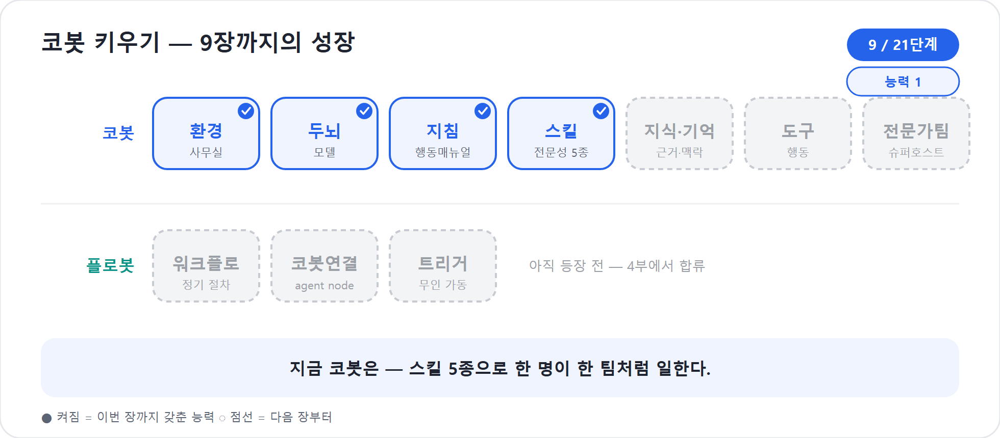

9장. 한 사람이 한 팀처럼 — Skill로 일하는 법을 가르친다
8장에서 우리는 코봇에게 행동매뉴얼, 곧 지침을 써주었다. 역할과 범위, 태도와 원칙을 정해주자 코봇은 제법 그럴듯하게 말하기 시작했다. 그러나 입사 첫 주의 코봇에게 “프로젝트 기획서 좀 만들어줘”라고 하면 손이 멈춘다. 말은 잘하는데, 일하는 법은 아직 배우지 못한 것이다. 말을 잘하는 것과 일을 끝내는 것은 다른 문제다.
이 장에서는 코봇에게 ‘일하는 법’을 가르치는 새로운 방식, Skill을 소개한다. 신버전 Copilot Studio의 Build 탭에는 지침, 지식, 도구, 스킬, 모델, 연결된 에이전트가 한 표면에 모인다. 그중 Skill은 코봇이 특정 업무를 맡았을 때 꺼내 읽는 재사용 가능한 업무 매뉴얼이다. 2026년 기준 새 에이전트 경험에서 가장 크게 달라진 지점이자, 이 책이 줄곧 이야기해 온 “지침이 곧 실력”이라는 명제가 가장 선명하게 드러나는 대목이다. 그래서 이 장을 3부의 심장이라 부른다.
대본을 그리던 시절
현실의 신입사원을 떠올려 보자. 행동매뉴얼을 받았다고 해서 모든 업무가 저절로 되지는 않는다. 어떤 일에는 정해진 절차가 있다. 프로젝트를 기획한다면 목표와 범위를 정하고, 이해관계자를 추리고, 성공 기준을 세운 뒤, 기획서로 정리한다. 이 순서가 곧 일이다.
예전 Copilot Studio, 지금은 클래식이라 불리는 그 환경에서는 이런 절차를 토픽(Topic)으로 만들었다. 앞선 과정에서 우리는 토픽을 ‘대본’에 비유했다. 어떤 상황이 오면 어떤 대사를 어떤 순서로 말할지 미리 짜둔 각본이라는 뜻이었다. 만드는 방식도 각본을 짜는 것과 닮아 있었다. 화면 위 캔버스에 노드를 놓고, 화살표로 잇고, 조건에 따라 흐름을 분기시켰다.
대본은 분명 강력했다. 정해진 길을 한 치도 벗어나지 않고 똑같이 반복해야 하는 업무라면, 토픽만큼 믿음직한 것도 없었다. 그러나 두 가지 약점이 늘 따라다녔다. 첫째, 그것은 결국 ‘그리는’ 일이었다. 노드를 잇고 분기를 치는 작업은 사실상 플로차트를 코딩하는 것에 가까웠고, 많은 사람이 바로 이 지점에서 막막함을 느꼈다. 글은 쓸 수 있어도 흐름도는 부담스러웠던 것이다. 둘째, 애써 만든 대본도 그 에이전트 안에 갇혀 있었다. 옆 팀에 똑같은 업무가 있어도 처음부터 다시 그려야 했다.
신버전 Learn 문서도 이 차이를 분명하게 설명한다. 클래식은 토픽, 플로, 분기 논리, 명시적 구성 노드 중심이다. 반면 새 에이전트 경험은 자연어로 에이전트의 목적과 행동을 설명하고, 지침과 추론이 행동을 이끈다. 오케스트레이션도 더 이상 켜고 끄는 선택지가 아니다. 새 경험의 모든 에이전트가 향상된 오케스트레이션 런타임을 사용한다.
토픽이 사라진 자리
신버전을 처음 열면 누구나 같은 것을 눈치챈다. 분명히 있어야 할 토픽 메뉴가 보이지 않는다. 그 익숙한 캔버스가 통째로 사라진 것이다. Microsoft Learn의 비교 문서도 새 경험에서는 Build, Preview, Evaluate, Monitor 네 탭이 중심이고, 지식·도구·스킬·설정이 하나의 Build 표면에 통합된다고 설명한다.
처음에는 당황스럽다. 토픽이 없다면 정해진 절차는 어디서 만든단 말인가. 답은 조금 더 정확하게 말해야 한다. 토픽은 Skill 하나로만 대체된 것이 아니라, Skill과 Workflows의 조합으로 대체되었다. 코봇이 상황을 판단하며 써야 할 업무 전문성은 Skill로 가르친다. 반드시 같은 순서로 돌아야 하는 자동화 절차는 4부에서 다룰 새 Workflows, 곧 플로봇에게 맡긴다.
그중 이 장의 주인공은 Skill이다. 핵심은 이것이다. Skill은 그리는 것이 아니라 쓰는 것이다.
토픽이 플로차트였다면, Skill은 한 장의 업무 매뉴얼이다. 그것도 거창한 도구가 필요 없는, 마크다운(글만으로 문서 구조를 잡는 간단한 작성 양식)으로 쓰는 텍스트다. 신입사원에게 노드와 화살표로 그린 흐름도를 내미는 대신, “이 일은 이렇게 하면 됩니다” 하고 또박또박 적어 건네는 한 장의 글. 그것이 Skill이다. 두 방식의 차이를 정리하면 다음과 같다.
| 구분 | 클래식: 토픽(Topic) | 신버전: Skill |
|---|---|---|
| 비유 | 대본 | 직무 전문성, 업무 매뉴얼 |
| 만드는 법 | 노드·분기를 그린다 | 마크다운으로 쓴다 |
| 주 사용처 | 대화 흐름을 명시적으로 제어 | 특정 업무를 수행하는 방법을 재사용 |
| 실행 방식 | 트리거·조건에 따라 정해진 흐름 진입 | 에이전트가 필요할 때 on-demand로 로드 |
| 재사용 | 주로 해당 에이전트 안에 묶임 | 파일·라이브러리·팀 표준으로 재사용 가능 |
| 결정성 | 설계한 흐름에 가까움 | 추론 기반이라 유연하지만 매번 완전히 같지는 않음 |
표의 마지막 두 줄이 중요하다. Skill은 토픽처럼 “이 사용자가 이 말을 하면 이 노드로 보내라”를 하나하나 지정하는 장치가 아니다. 코봇에게 “이런 종류의 일을 맡으면 이 매뉴얼을 읽고 처리하라”고 가르치는 방식이다. 그래서 유연하다. 대신 법적 고지 발송, 결재 라우팅, 시스템 등록처럼 한 치의 흔들림도 없어야 하는 절차는 Skill만으로 밀어붙이지 않는다. 그런 일은 플로봇과 함께 설계한다.
2026년 기준 주의
새 에이전트 경험은 빠르게 변하는 미리보기/초기 출시 영역이다. 이 장의 화면 명칭과 동작은 2026년 6월 기준 Microsoft Learn과 공개 데모에서 확인한 범위로 설명한다. 세부 UI와 지원 범위는 바뀔 수 있다.
거대한 지침 하나 대신, 잘 나뉜 전문성 여럿
여기서 흔한 오해 하나를 짚고 가자. “절차가 필요하면 지침에 다 적으면 되지 않나?” 실제로 그렇게 할 수도 있다. 코봇의 지침에 기획하는 법, 일정 짜는 법, 예산 잡는 법, 리스크 보는 법, 보고하는 법을 전부 욱여넣는 것이다. 그러나 그렇게 만든 거대한 지침은 금세 다루기 어려워진다. 한 단락을 고치면 다른 업무가 흔들리고, 어디에 무엇이 적혀 있는지 본인조차 헷갈린다.
신버전이 권하는 길은 정반대다. 하나의 거대한 프롬프트가 아니라, 초점이 분명한 여러 개의 Skill로 나눈다. 기획은 기획 Skill에, 일정은 일정 Skill에 담는다. 각 Skill은 하나의 직무 전문성을 책임진다. 그러면 에이전트의 능력이 구조화되고, 고치고 늘리기도 쉬워진다. 신입에게 모든 걸 적은 두꺼운 노트 한 권을 주는 대신, 업무별로 깔끔하게 분철된 매뉴얼 다섯 장을 건네는 셈이다.
공개 데모에서 프로젝트 매니저 에이전트를 만드는 흐름도 이와 같았다. 에이전트 하나에 “비즈니스 분석가처럼 요구사항을 정리하라”, “아키텍트처럼 설계를 만들라”, “QA 엔지니어처럼 테스트 케이스를 만들라”는 역할을 전부 한 지침에 넣지 않고, 각각의 Skill로 나누었다. 그러자 에이전트는 한 사람처럼 보이지만, 내부적으로는 여러 전문가의 작업 방식을 차례로 빌려 쓰는 형태가 되었다.
이 발상이 데려가는 곳이 이 장의 진짜 주제다. 바로 한 사람이 한 팀처럼 일하는 코봇이다.
코봇 한마디
"저는 두꺼운 지침 한 권보다 잘 나뉜 매뉴얼 여러 장을 더 잘 써요. 필요한 순간에 맞는 모자를 쓰면, 한 명이어도 작은 팀처럼 움직일 수 있습니다!"
왜 나누면 더 잘하나 — 작업대는 좁다
Skill을 잘게 나누는 것이 단지 정리정돈 때문은 아니다. 더 근본적인 이유가 있다. 코봇의 ‘작업대’, 곧 한 번에 머릿속에 펼쳐 놓고 일할 수 있는 분량(컨텍스트)은 무한하지 않다. 책상이 좁은데 서류를 산더미처럼 올려 두면, 정작 지금 필요한 한 장을 못 찾는다. 사람도 그렇고 모델도 그렇다. 자료를 많이 줄수록 똑똑해지는 것이 아니라, 어느 선을 넘으면 오히려 핵심을 놓치고 엉뚱한 곳을 본다. 업계에서는 이를 “맥락이 길어질수록 정확도가 흐려진다”는 문제로 부른다.
그래서 좋은 설계의 목표는 “가능한 한 많이 넣기”가 아니라 “원하는 결과를 내는 가장 작은, 가장 또렷한 정보만 그 순간에 올려놓기”다. Skill의 on-demand 로드(필요한 순간에 딱 꺼내 쓰기)가 바로 이 원리의 구현이다. 기획 Skill은 기획할 때만, 일정 Skill은 일정 짤 때만 작업대에 오른다. 평소 코봇의 책상은 늘 깨끗하고, 모든 매뉴얼을 동시에 끌어안고 헤매지 않는다. 거대한 지침 한 권이 위험한 진짜 이유가 여기 있다. 그것은 보기 싫어서가 아니라, 항상 펼쳐져 있어 작업대를 통째로 차지하기 때문이다.
"제 책상은 생각보다 좁아요. 그래서 지금 일에 필요한 매뉴얼만 딱 꺼내 올려요. 다 펼쳐 놓으면 오히려 중요한 한 줄을 놓치거든요!"
코봇에게 전문성 다섯 가지를 가르친다
코봇의 첫 임무는 프로젝트 하나를 통째로 운영하는 것이다. 현실에서라면 기획자, 일정 담당, 예산 담당, 리스크 관리자, 보고 담당이 따로 붙어야 할 일이다. 우리에게는 코봇 한 명뿐이다. 그러나 Skill을 쓰면, 코봇은 다섯 개의 모자를 바꿔 쓰며 그 다섯 사람 몫을 해낸다.
| Skill | 코봇이 쓰는 모자 | 언제 등장하나 | 만들어내는 것 |
|---|---|---|---|
project-planner |
기획자 | “프로젝트”, “기획”, “새로 시작” | 프로젝트 기획서 |
schedule-designer |
일정 설계자 | 기획이 정해진 뒤, “일정/스케줄” 요청 | 일정표(WBS) |
budget-resource |
예산·자원 담당 | 일정이 나온 뒤, “예산/비용/인력” 요청 | 예산안 |
risk-checker |
리스크 관리자 | 계획이 선 뒤, “리스크/위험” 요청 | 리스크 레지스터 |
reporter |
보고 담당 | 산출물이 모인 뒤, “보고/요약/현황” 요청 | 상태보고서 |
여기서 길어 올릴 통찰은 분명하다. 코봇은 분명 한 명, 즉 에이전트 하나다. 하지만 잘 나뉜 Skill 덕분에 한 팀처럼 일한다. 챗봇이 그저 질문에 답하던 자리에, 이제 스스로 직무를 갈아입으며 일을 끝내는 일꾼이 들어선 것이다.
다만 이 다섯 모자는 아직 독립된 전문가 에이전트가 아니다. 예산 담당자나 리스크 관리자를 별도 에이전트로 분화해 코봇이 연결된 에이전트로 부르게 만드는 설계는 12장의 슈퍼호스트에서 다룬다. 이 장의 목표는 그 전 단계다. 한 명의 코봇 안에 여러 업무 매뉴얼을 넣어, 혼자서도 프로젝트 운영의 뼈대를 세우게 하는 것이다.
Skill은 Build 탭 어디에 붙는가
이제 실제 화면을 머릿속에 그려 보자. 새 에이전트 경험에서 에이전트를 만들면 상단에는 Build · Preview · Evaluate · Monitor 탭이 보인다. Skill을 추가하는 곳은 Build 탭이다. Learn 문서의 표현대로 Build는 에이전트의 정체성, 지식, 도구, 스킬, 모델을 구성하는 자리다.
대체로 흐름은 다음과 같다.
- Copilot Studio에서 새 경험으로 만든 에이전트를 연다.
- Build 탭으로 이동한다.
- 구성요소 목록에서 Tools and skills를 연다.
- Skills 영역에서 새 Skill을 만든다. 2026년 공개 데모
기준으로는 직접 만들기와
skill.md파일 업로드 흐름이 모두 소개되었다. - 직접 만들 때는 이름, 설명, 본문을 입력한다.
- 저장한 뒤 Preview에서 실제 요청을 던져, 코봇이 어떤 Skill을 불러오는지 확인한다.
직접 만드는 방식은 사내 업무 매뉴얼을 화면 안에서 바로 쓰는 느낌에
가깝다. 업로드 방식은 이미 갖고 있는 skill.md 파일을
가져오는 흐름에 가깝다. 공개 데모에서는 GitHub Copilot이나 Claude Code
쪽에서 쓰던 에이전트 Skill 개념과 호환된다고 소개되었다. 이 말은 한국
독자에게 꽤 실용적인 의미가 있다. 개발팀이 이미 GitHub Copilot용으로
정리해 둔 코드 리뷰 절차, 릴리스 노트 작성 방식, 장애 회고 템플릿이
있다면, 그중 일부를 Copilot Studio의 업무 에이전트에도 재사용할 가능성이
열린다는 뜻이다. 반대로 현업팀이 Copilot Studio에서 다듬은 회의록 정리
Skill이 개발 조직의 에이전트 작업 방식으로 확장될 수도 있다.
팁
처음부터 완벽한 Skill 파일을 손으로 쓰려고 하지 않아도 된다. Preview에서 코봇에게 원하는 산출물 형식을 여러 번 고쳐 달라고 한 뒤, “이 방식으로 다음에도 쓸 수 있는 skill.md를 만들어줘”라고 요청해 초안을 얻는 방법이 공개 데모에서 소개되었다. 단, 그대로 믿고 붙이지 말고 설명·절차·금지사항을 사람이 검토해야 한다.
함정
업로드한 Skill이 화면에서 언제나 자유롭게 수정되는 것은 아닐 수 있다. 공개 데모에서는 직접 만든 Skill은 다시 열어 수정할 수 있지만, 업로드한 Skill은 편집 제약이 있는 모습이 보였다. 미리보기 기능이므로 운영 환경에서는 팀의 관리 정책과 현재 UI를 확인하고 정한다.
Skill의 정체
말로만 들으면 추상적이니, 실제 Skill 하나를 들여다보자. 코봇에게 줄 첫 모자, ‘기획자’ Skill은 이런 모양이다.
# project-planner
## 설명
- 무엇을: 새 프로젝트의 목표·범위·이해관계자·성공 기준을 정리해 기획서를 만든다.
- 언제 쓰는가: 사용자가 "프로젝트", "기획", "새로 시작" 같은 말로 일을 열 때.
## 절차
1. 프로젝트의 목적과 배경을 한두 문장으로 확인한다.
2. 범위(포함/제외)와 핵심 이해관계자를 정리한다.
3. 성공 기준(무엇이 되면 성공인가)을 구체적으로 세운다.
4. 빠진 정보가 있으면 먼저 한 가지씩 되물은 뒤 진행한다.
5. 위 내용을 '프로젝트 기획서' 형식으로 정리한다.
## 가이드라인
- 추측으로 채우지 말고, 모르는 항목은 사용자에게 묻는다.
- 회사 기획서 템플릿(지식)이 있으면 그 형식을 따른다.
## 노트
- 기획이 확정되면 일정 수립은 'schedule-designer'로 넘긴다.한눈에 읽힌다. 코드가 아니라 글이기 때문이다. 절차가 있고, 지켜야 할
가이드라인이 있고, 다음 단계로 넘기는 노트가 있다. 누구라도 사내 업무
안내문을 쓰듯 작성할 수 있다. 이름에는 규칙이 있다. 공개 데모 기준으로
Skill 이름은 소문자와 하이픈을 쓰는 형태가 권장되며, 대문자나 공백을
넣으면 경고가 표시된다. 그래서 Project Planner가 아니라
project-planner라고 쓴다.
실제 제품 화면에서는 이 본문이 “이름, 설명, 지침/본문”처럼 나뉘어
보일 수 있고, 파일로 가져올 때는 skill.md 안에 설명
메타데이터와 마크다운 본문이 함께 들어갈 수 있다. 표현은 조금 달라도
핵심은 같다. 설명은 발견을 위한 신호이고, 본문은 일을 수행하기
위한 매뉴얼이다.
description은 Skill의 호출벨이다
Skill에서 가장 중요한 부분은 맨 위의 설명(description, 언제 이 Skill·도구를 쓰는지 알려주는 호출 설명서)이다. 특히 “언제 쓰는가”가 중요하다. 코봇은 대화를 나누는 매 순간 “지금 어떤 모자를 써야 하는가”를 스스로 판단한다. 그 판단의 단서가 바로 description이다.
생각해 보자. 사무실 책장에 매뉴얼이 백 권 꽂혀 있어도, 표지에 아무 말이 없으면 신입은 어떤 책을 꺼내야 할지 모른다. “프로젝트 기획서 작성법”이라고만 쓰여 있어도 부족하다. “새 프로젝트를 시작하거나 목표·범위·성공 기준을 정리해야 할 때 사용”이라고 적혀 있어야 한다. 그래야 코봇은 사용자의 말에서 신호를 찾는다.
좋은 description은 보통 세 가지를 담는다.
| 요소 | 좋은 예 | 나쁜 예 |
|---|---|---|
| 업무 목적 | 새 프로젝트의 목표·범위·성공 기준을 정리한다 | 프로젝트 관련 업무를 한다 |
| 호출 상황 | 사용자가 “프로젝트 시작”, “기획”, “새 과제”를 말할 때 | 필요할 때 사용한다 |
| 산출물 | 프로젝트 기획서 초안을 만든다 | 결과를 제공한다 |
나쁜 예는 틀린 말은 아니지만 신호가 흐릿하다. “프로젝트 관련 업무”는 일정, 예산, 리스크, 보고를 모두 포함할 수 있다. 이런 설명이 여러 Skill에 반복되면 코봇은 엉뚱한 모자를 쓰거나, 두세 개를 한꺼번에 꺼내 혼란스러워할 수 있다. 좋은 description은 좁고 선명하다. “언제”, “무엇을”, “무슨 산출물로”가 보이면 코봇이 판단하기 쉽다.
현장에서
스킬이 안 불린다는 불평의 상당수는 본문보다 description 문제에서 시작된다. 본문에 절차를 길게 잘 써놓고도 설명이 “보고 업무 지원”처럼 흐릿하면, 코봇은 그 Skill을 찾아야 할 순간을 놓친다. 반대로 description이 선명하면 본문이 조금 투박해도 Preview에서 호출 여부를 빨리 검증할 수 있다.
"스킬 설명은 제 호출벨이에요. '언제, 무엇을, 어떤 산출물로'가 선명할수록 제가 엉뚱한 모자를 쓰지 않고 바로 일을 시작합니다!"
좋은 Skill 마크다운의 구조
Skill은 긴 문학 작품이 아니다. 코봇이 일을 할 때 빠르게 읽고 따를 수 있는 업무 카드에 가깝다. 그래서 구조가 중요하다. 이 책의 러닝 예제에서는 다음 네 덩어리를 기본형으로 쓴다.
| 덩어리 | 역할 | 작성 요령 |
|---|---|---|
| 설명 | Skill의 목적과 호출 신호 | “무엇을”과 “언제 쓰는가”를 분리해 쓴다 |
| 절차 | 코봇이 따라야 할 작업 순서 | 5~7단계 정도로, 동사로 시작한다 |
| 가이드라인 | 품질 기준과 금지사항 | 추측 금지, 형식 준수, 질문 기준 등을 쓴다 |
| 노트 | 다음 Skill, 관련 지식, 도구 경계 | 연쇄 흐름과 주의사항을 짧게 남긴다 |
필요하면 여기에 출력 형식을 더한다. 예를 들어
budget-resource에는 “항목·수량·단가·합계가 담긴 표로
정리한다”를 넣고, reporter에는 “경영진이 30초 안에 읽도록
핵심부터 쓴다”를 넣는다. 이는 단순한 장식이 아니다. Skill은 코봇에게
“일을 어떻게 끝난 것으로 볼 것인가”를 알려주는 장치다.
작게 보이지만 “노트”도 중요하다. 우리 예제에서
project-planner의 노트는 기획이 확정되면
schedule-designer로 넘기라고 말한다.
schedule-designer는 일정이 서면
budget-resource로 넘긴다. 이렇게 다음 모자를 가리키는 짧은
문장이 있으면, 코봇은 한 번의 요청을 여러 산출물로 이어가는 길을 찾기
쉽다.
다만 이 연쇄는 Workflows처럼 강제 실행되는 파이프라인이 아니다. 코봇이 추론하며 따르는 안내선이다. 반드시 같은 순서, 같은 조건, 같은 오류 처리로 돌아야 한다면 4부에서 플로봇으로 설계해야 한다.
다섯 모자가 이어지는 순간
나머지 네 개의 모자도 같은 틀로 쓴다. 실제로는 다음처럼 노트가 이어진다.
"프로젝트 시작해줘"
→ project-planner (기획서)
→ schedule-designer (일정표)
→ budget-resource (예산안)
→ risk-checker (리스크 레지스터)
→ reporter (상태보고서)예를 들어 사용자가 이렇게 말한다.
“다음 달 본사에서 80명 규모의 사내 워크숍을 열려고 해. 코봇, 프로젝트로 시작해줘.”
Skill이 없다면 코봇은 일반론을 말할 가능성이 크다. 그러나 다섯 모자를
받은 코봇은 먼저 project-planner를 떠올린다. 목적과 범위,
이해관계자, 성공 기준을 묻는다. 인원과 예산 상한, 장소 제약을 확인한 뒤
기획서 초안을 만든다. 이어서 일정이 필요하다고 판단하면
schedule-designer로 넘어간다. 장소 예약, 프로그램 구성,
안내 메일, 만족도 설문 같은 작업을 WBS로 나눈다. 그다음 예산과 리스크,
보고서가 차례로 이어진다.
여기서 코봇이 하는 일은 단순히 긴 답변을 쓰는 것이 아니다. 각 단계에서 다른 기준으로 생각한다. 기획자 모자를 썼을 때는 범위와 성공 기준을 본다. 일정 설계자 모자를 썼을 때는 선후 관계와 마일스톤을 본다. 예산 담당 모자를 썼을 때는 원화 금액과 예비비를 본다. 리스크 관리자 모자를 썼을 때는 발생 가능성과 영향을 본다. 보고 담당 모자를 썼을 때는 의사결정자가 30초 안에 이해할 핵심을 본다.
이것이 “한 사람이 한 팀처럼”의 정확한 뜻이다.
만드는 것과 행동하는 것
한 가지를 미리 구분해 두자. Skill은 콘텐츠를 만들어내는 능력이다. 기획서를 쓰고, 일정을 짜고, 보고서를 정리한다. 그런데 그렇게 만든 기획서를 실제 Word 문서로 떨어뜨리거나, 사내 시스템에 등록하거나, 담당자에게 메일을 보내는 일은 또 다른 종류의 능력이다. 그것은 도구(Tool)의 몫이다.
Skill은 생각하고 만들고, Tool은 행동한다.
코봇이 기획서 내용을 머릿속에서 완성하는 것이 Skill이라면, 그 내용을
받아 정해진 템플릿의 .docx 파일로 출력하는 것은 Tool이다.
일정표를 “어떻게 짜는지”는 Skill이 알아도, 그것을 SharePoint 폴더에
저장하거나 Teams 채널에 알리는 행동까지 Skill 자체가 대신하는 것은
아니다. 이 둘의 분업은 11장에서 본격적으로 다룬다. 지금은 “스킬은 일의
내용을, 도구는 일의 실행을 맡는다”는 경계만 기억해 두면 된다.
| 필요한 일 | 맡기는 곳 | 이유 |
|---|---|---|
| 워크숍 기획서 초안 작성 | Skill | 산출물의 논리와 형식을 판단해야 함 |
| 예산 항목을 원화 표로 정리 | Skill | 계산 가정과 설명이 필요함 |
| 완성본을 Word 템플릿으로 저장 | Tool | 파일 생성이라는 행동이 필요함 |
| 승인 요청을 Teams에 발송 | Tool 또는 Workflow | 외부 시스템 실행과 권한이 필요함 |
| 매주 월요일 오전 자동 보고 | Workflow | 일정 기반 반복 실행이 필요함 |
공개 데모에서도 같은 구분이 반복된다. Skill은 산출물과 추론을 강화하고, Tool은 액션을 수행한다. 이 구분을 흐리면 설계가 금세 지저분해진다. Skill 안에 “메일을 보낸다”고 써놓는다고 해서 실제 메일이 안전하게 발송되는 것은 아니다. 발송은 인증, 권한, 오류 처리, 감사 기록이 필요한 행동이다. 그런 일은 도구와 워크플로의 세계다.
Skill과 Workflows의 경계
Skill과 플로봇, 즉 새 Workflows의 경계도 이쯤에서 잡아두자. Skill은 코봇이 상황을 보고 그때그때 골라 쓰는 전문성이다. “프로젝트 시작해줘”라는 말 한마디에도 코봇은 매번 “지금은 기획 차례인가, 일정 차례인가”를 스스로 판단해 모자를 고른다. 판단이 들어가는 만큼 유연하지만, 그 유연함이 늘 같은 결과를 보장하지는 않는다.
반대로 Workflows는 정해진 절차를 어김없이 도는 설비다. 2026년 기준 새 Workflows는 공개 미리보기로 소개되었고, 통합 비주얼 캔버스, 노드 단위 테스트, 버전 기록, 분석, agent node 같은 기능을 갖춘다. 여기서 중요한 점은 Workflows가 옛 agent flows와 같은 말이 아니라는 것이다. 이 책에서 플로봇이라고 부르는 것은 새 Workflows다.
| 질문 | Skill이 어울리는 경우 | Workflows가 어울리는 경우 |
|---|---|---|
| 결과가 매번 조금 달라도 되는가 | 사용자의 맥락에 맞춰 달라져도 좋다 | 같은 입력이면 같은 절차가 필요하다 |
| 핵심이 판단인가 실행인가 | 판단·정리·작성·분석이 핵심이다 | 등록·승인·발송·반복이 핵심이다 |
| 오류 처리가 중요한가 | 코봇이 되묻거나 보완하면 된다 | 실패 분기, 재시도, 감사가 필요하다 |
| 예 | 리스크 목록 작성, 보고서 초안 | 결재 요청 생성, 매주 보고 발송 |
또 하나의 변화도 기억해 두자. 클래식에서 쓰던 AI 프롬프트 기능은 새 경험에서 같은 자리에 남아 있지 않다. 에이전트 쪽에서는 Skill이 그 역할을 흡수하고, 워크플로 쪽에서는 agent node가 유연한 판단을 맡는다. 그러므로 신버전 설계에서 “프롬프트 도구 하나 만들면 된다”고 말하면 옛 방식과 섞이기 쉽다.
한 번 쓰고, 모두가 나눠 쓴다
Skill의 또 다른 매력은 재사용에 있다. 코봇의
project-planner는 결국 텍스트로 된 매뉴얼이다. 그래서 옆 팀
에이전트에 옮겨 붙일 수 있고, 회사 전체가 함께 쓰는 표준 Skill
라이브러리로 묶을 수도 있다. 직접 만든 Skill은 팀의 업무 변화에 맞게
고칠 수 있고, 외부에서 가져온 Skill은 관리 정책에 따라 수정이 제한될 수
있다.
GitHub Copilot이나 Claude Code 스킬과의 호환은 이 재사용의 폭을 넓힌다. 개발자에게는 익숙한 개념일 수 있지만, 현업 독자에게도 의미가 있다. 회사가 “AI에게 일을 가르치는 방식”을 제품마다 따로따로 만들지 않아도 된다는 뜻이기 때문이다. 영업팀의 제안서 Skill, 인사팀의 온보딩 Skill, IT팀의 장애 보고 Skill이 모두 마크다운 매뉴얼이라는 공통 형식으로 정리되면, 그것은 단순한 파일 묶음이 아니라 조직의 업무 지식 자산이 된다.
우리 예제는 프로젝트 운영 5종에 집중하지만, 같은 발상은 어느
부서에서나 통한다. 인사팀이라면 직무기술서를 쓰는
job-description-writer나 온보딩 체크리스트를 만드는
onboarding-guide를, 영업·마케팅이라면 제안서 골격을 잡는
proposal-drafter를, 고객지원이라면 문의를 정리하는
ticket-summarizer를 같은 형식으로 쪼갤 수 있다. 부서별 스킬
갤러리 전체는 부록 E의 E2에 모아두었으니, 자기 업무를
어떻게 한 조각씩 나눌지 감을 잡는 데 참고하면 된다.
더 보기 — 부서별 Skill 갤러리 전체는 부록 E의 E2·E3에, 발췌 샘플은 컴패니언 사이트의 「Skill 샘플 갤러리」에 있다.
공통 규칙은 한결같다. 이름은 좁고 분명하게, description에는 호출 신호를, 본문에는 절차와 품질 기준을, 노트에는 다음 단계와 경계를 쓴다.
재사용에는 한 걸음이 더 있다. 지금까지는 모자를 직접 만들거나
옆 팀에서 옮겨 오는 두 길을 보았다. 여기에 세 번째 길이 열리고
있다. 남이 만든 모자를 가져다 쓰는 길, 곧 스킬을
게시하고 골라 쓰는 마켓플레이스다. 누군가 잘 다듬어
공개한 meeting-summarizer나 contract-reviewer
같은 모자를, 처음부터 쓰지 않고 가져와 우리 코봇에 씌우는 것이다. 사내에
표준 스킬 갤러리를 두는 조직이라면, 그 갤러리가 곧 우리 팀의 모자 가게가
된다.
남의 모자라고 해서 검증을 건너뛰면 안 된다. 가져온 스킬의 description이 우리 업무 신호와 맞는지, 본문의 절차가 우리 품질 기준과 어긋나지 않는지, 노트가 우리에게 없는 도구나 워크플로를 전제하지 않는지 확인한 뒤에 씌운다. 옷가게에서 좋아 보이는 모자도 내 머리에 맞는지 써 보는 것과 같다.
"이제 모자는 직접 만들 수도, 옆 팀에서 빌릴 수도, 가게에서 사 올 수도 있어요. 다만 사 온 모자도 제 머리에 맞는지 꼭 써 보고 씌워 주세요!"
흔한 함정과 안티패턴
첫 번째 함정은 만능 Skill이다. 이름은
project-helper, 설명은 “프로젝트 업무를 지원한다”, 본문에는
기획·일정·예산·리스크·보고가 모두 들어 있다. 이것은 Skill로 나눈 것처럼
보이지만 사실상 거대한 지침을 다른 칸에 옮겨놓은 것뿐이다. 코봇은 어느
순간 어떤 기준을 적용해야 할지 헷갈린다. 이런 Skill은 다섯 개로 쪼개야
한다.
두 번째 함정은 Tool 흉내를 내는 Skill이다. “완성된 보고서를 Teams에 보내고 승인까지 받아라”라고 Skill 본문에 써놓는 식이다. 코봇은 그런 문장을 읽고 의도는 이해할 수 있지만, 실제 Teams 발송과 승인 라우팅에는 연결, 권한, 오류 처리, 기록이 필요하다. 이는 11장의 Tool, 4부의 Workflows, 6부의 거버넌스·비용 논의와 이어지는 문제다.
세 번째 함정은 description 복붙이다. 다섯 Skill의
설명이 모두 “프로젝트를 도와준다”로 시작하면 호출 신호가 겹친다. 특히
schedule-designer와 budget-resource처럼 연달아
쓰이는 Skill은 설명을 더 선명하게 나누어야 한다. 일정 Skill은 “작업
분해, 선후 관계, 마일스톤”을 말하고, 예산 Skill은 “비용 항목, 인력·자원,
원화 추정”을 말해야 한다.
| 안티패턴 | 증상 | 고치는 법 |
|---|---|---|
| 만능 Skill | 본문이 길고 호출 기준이 흐림 | 산출물 기준으로 여러 Skill로 분리 |
| Tool 흉내 | “보내기/등록/승인”을 글로만 지시 | Tool 또는 Workflow로 실행 경로 설계 |
| 설명 복붙 | 엉뚱한 Skill이 불리거나 호출 누락 | description에 호출어·산출물·단계를 명시 |
| 출력 형식 없음 | 매번 결과 모양이 달라짐 | 표, 항목, 보고서 형식을 본문에 지정 |
Preview에서 검증한다
Skill을 붙였다고 일이 끝난 것은 아니다. 신입에게 매뉴얼을 건넨 뒤에는 실제로 일을 시켜 봐야 한다. 새 에이전트 경험의 Preview 탭은 이 검증을 위한 자리다. 공개 데모에서는 개발자 관점의 미리보기에서 코봇이 어떤 Skill을 찾고, 어떤 도구를 호출하고, 어떤 추론을 거쳤는지 확인하는 흐름이 소개되었다. 반대로 최종 사용자 미리보기는 복잡한 내부 과정을 숨기고 사용자에게 보일 답변만 확인하게 한다.
9장에서 해볼 검증은 단순하다.
- “다음 달 사내 워크숍 프로젝트 시작해줘”라고 요청한다.
- 코봇이 먼저
project-planner를 떠올리는지 본다. - 빠진 정보가 있을 때 한 번에 너무 많은 질문을 던지지 않고 핵심부터 묻는지 본다.
- 기획서가 나온 뒤 일정, 예산, 리스크, 보고로 자연스럽게 이어지는지 본다.
- 엉뚱한 Skill이 불리면 description을 고친다.
- 산출물 형식이 흔들리면 Skill 본문의 출력 형식을 보강한다.
여기서 중요한 태도는 “한 번에 맞히기”가 아니라 “작게 고치기”다. Skill은 코드가 아니므로 수정 비용이 낮다. description 한 줄을 고쳐 다시 Preview하고, 절차 하나를 쪼개 다시 Preview한다. 이렇게 다듬다 보면 코봇의 일솜씨가 눈에 띄게 안정된다.
작은 사례
한 교육팀이workshop-helper라는 Skill 하나로 워크숍 기획, 강사 섭외, 예산, 안내문 작성을 모두 처리하려 했다. Preview에서는 안내문만 잘 나오고 예산표는 매번 형식이 달랐다. Skill을workshop-planner,speaker-brief,budget-resource,attendee-notice로 나누고 description을 각각 좁히자, 코봇은 먼저 기획을 잡고 예산 상한을 물은 뒤 안내문을 작성하기 시작했다. 바뀐 것은 모델이 아니라 매뉴얼의 분철 방식이었다.
같은 질문, 다른 코봇
차이는 직접 비교할 때 가장 선명하다. 지침만 받은 코봇과, 거기에 다섯 개의 Skill을 더한 코봇에게 똑같이 “다음 달 사내 워크숍 프로젝트 좀 시작해줘”라고 해보자. 지침만 있는 코봇은 이렇게 답할 수 있다.
“워크숍 준비는 보통 기획, 일정, 예산을 차례로 정하시면 됩니다. 자세한 내용은 담당 부서와 협의해 보세요.”
틀린 말은 아니지만 일이 시작되지 않는다. 방법을 안내하고 책임을 사용자에게 되돌려준다. 반면 Skill을 받은 코봇은 같은 말에 이렇게 움직인다.
“워크숍 프로젝트를 시작하겠습니다. 먼저 기획부터 잡겠습니다. 목적은 ‘하반기 팀 역량 강화’로 이해하면 될까요? 참석 인원, 예산 상한, 희망 날짜만 알려주시면 기획서·일정표·예산안·리스크 점검·상태보고서 순서로 정리해 드리겠습니다.”
그러고는 기획자 모자를 쓰고 기획서를 만들기 시작한다. 절차를 알고, 무엇을 만들지 알고, 무엇보다 일을 끝내려 한다. 이 차이를 만든 것은 코드 한 줄이 아니라, 잘 쓴 매뉴얼 다섯 장이었다.
"잘 쓴 Skill 다섯 장은 저를 안내만 하는 봇에서 일을 시작하는 동료로 바꿔 줘요. 코드가 아니라 업무 매뉴얼이 제 일솜씨를 키웁니다!"
핵심 정리
| # | 요점 |
|---|---|
| 1 | 신버전에는 클래식 토픽이 없다. 토픽의 자리는 Skill + Workflows 조합이 나누어 맡는다. |
| 2 | Skill은 마크다운으로 쓰는 재사용 가능한 업무 매뉴얼이며, 에이전트가 필요할 때 on-demand로 로드한다. |
| 3 | 거대한 지침 하나보다, 직무별로 잘 나눈 여러 Skill이 낫다. 코봇은 그렇게 한 사람이 한 팀처럼 일한다. |
| 4 | Skill의 호출을 좌우하는 핵심은 description이다. “언제, 무엇을, 어떤 산출물로”가 선명해야 한다. |
| 5 | Build 탭의 Tools and skills에서 Skill을 만들거나 가져오고, Preview에서 실제 호출 여부를 검증한다. |
| 6 | Skill은 만들고, Tool은 행동한다. 파일 생성·발송·등록·승인은 11장의 Tool과 4부의 Workflows로 넘긴다. |
| 7 | 기존 GitHub Copilot·Claude Code 스킬과의 호환은 Skill을 조직의 공통 업무 지식 자산으로 키울 가능성을 연다. |
자주 묻는 질문(FAQ)
| 질문 | 답변 |
|---|---|
| 지침과 Skill은 무엇이 다른가? | 지침은 코봇의 정체성·공통 규칙으로 늘 적용되고, Skill은 특정 직무를 어떻게 하는지로 필요할 때 호출된다. |
| 스킬이 안 불려요. | 십중팔구 description이 모호한 것이다. “언제 이 스킬을 쓰는지”, “무슨 산출물을 만드는지”를 더 구체적으로 적는다. |
| 정말 마크다운만 쓰면 되는가? | 기본은 마크다운 업무 매뉴얼이다. 화면에서는 이름·설명·본문으로
입력할 수 있고, 파일로는 skill.md 형태를 가져오는 흐름이
소개되었다. |
| Skill이 클래식 토픽을 완전히 대신하나? | 정확히는 아니다. 신버전에서는 Skill과 Workflows의 조합이 토픽의 자리를 나누어 맡는다. 결정적 절차는 Workflows로 설계한다. |
| Skill과 Tool은 무엇이 다른가? | Skill은 산출물을 어떻게 만들지 알려주는 전문성이고, Tool은 외부 시스템에 실제 행동을 하는 손발이다. 자세한 Tool 설계는 11장에서 다룬다. |
| 기존 GitHub Copilot이나 Claude Code 스킬을 써도 되나? | 공개 설명 기준으로 기존 스킬 호환이 핵심 방향이다. 다만 추가 리소스를 포함한 스킬 지원 등 세부 범위는 2026년 기준 변경될 수 있으므로 현재 제품 안내를 확인한다. |
다음 장에서는
이 장에서 Skill이 무엇이고, 코봇이 어떻게 ‘한 사람이 한 팀처럼’ 일하게 되는지를 잡았다. 10장에서는 코봇에게 지식과 기억을 달아준다. 회사 기획서 템플릿을 교과서로 쥐여주고, “나는 이 프로젝트의 PM”이라는 맥락을 코봇이 기억하게 만들어, 매번 처음부터 다시 묻지 않도록 한다.
실습 — 코봇 키우기 9단계: 스킬 5종을 달아 ‘한 명이 한 팀처럼’

〔이어받기〕 8장까지 코봇은 정체성만 갖춘 빈손의 신입이다. 시키면 말은 하지만 기획서·일정표를 직무답게 만들진 못한다. 이번 장에서 전문성을 단다.
8-a. 스킬 5종을 장착한다. Build → Tools and skills에서 다섯 Skill을 추가하고, 각 description에 무엇을·언제 쓰는지를 한 문장으로 적는다.
| 스킬 | 직무 | 활성화 조건(description 요지) | 산출물 |
|---|---|---|---|
project-planner |
기획 | “프로젝트 시작·기획 요청 시” | 기획서(Charter) |
schedule-designer |
일정 | “일정·마일스톤 요청 시” | 일정표 |
budget-resource |
예산 | “예산·자원 산정 요청 시” | 예산안 |
risk-checker |
리스크 | “위험·이슈 점검 요청 시” | 리스크 레지스터 |
status-reporter |
보고 | “상태보고·진행현황 요청 시” | 상태보고서 |
8-b. 한 마디로 시킨다. Preview에서 “여름
신제품 출시 프로젝트, 시작해줘” → 코봇이
project-planner부터 순서대로 스킬을 스스로 골라
호출하는지 본다.
8-c. 경계를 확인한다(플로봇 대비 한 컷). 스킬은 코봇이 상황을 보고 골라 쓰는 전문성이다. “매주 금요일 같은 양식으로 발송”처럼 늘 같은 순서로 도는 일은 플로봇(4부)의 몫이다.
〔성장〕 코봇은 이제 스킬 5종을 바꿔 쓰는 만능 신입 — “한 명이 한 팀처럼” 일한다. 〔검증 포인트〕 “프로젝트 시작” 한 마디에 기획→일정→예산→리스크→보고 순으로 불리면 통과. 단, 산출물은 아직 텍스트일 뿐 — 파일로 만들어 올리는 행동은 11장(도구)에서.